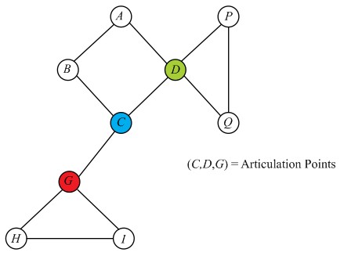
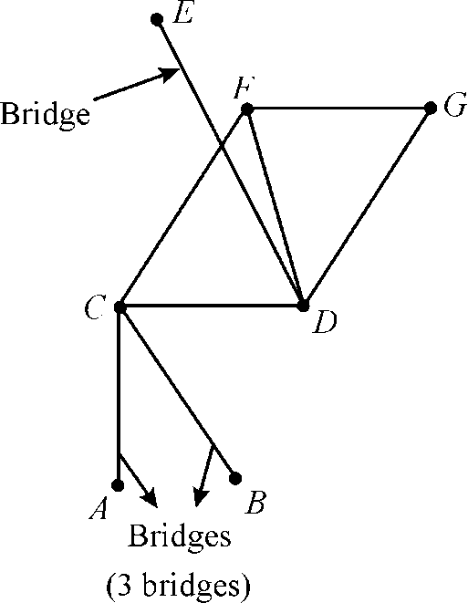
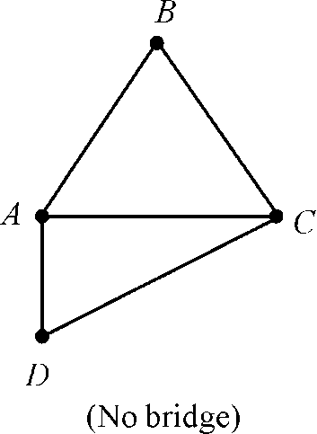
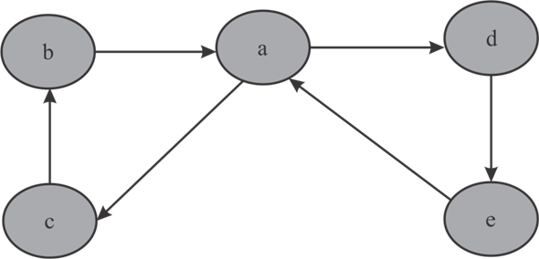
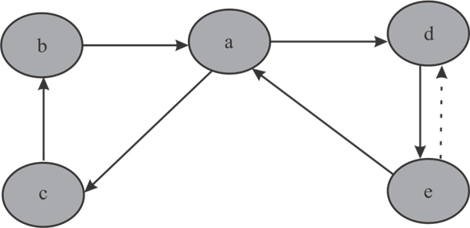

a.
Undirected Breadth –First Search graph properties:
1.
Consider an edge (u, v) to be a back edge or a forward edge of an undirected graph.
• Then, one vertex, say u, is a proper ancestor of another vertex, say v, in the breadth-first tree.
• As all edges of u are explored before exploring any edges of the descendants of u, the edge (u, v) is explored at the time when u is explored.
• Then it is concluded that the edge (u, v) is a tree edge.
Hence, there are no back edges and no forward edges in a Breadth –First Search of an undirected graph.
2.
• In BFS, an edge (u, v) is a tree edge when is set. It can be done only when.
• Once the values are set, neither nor
 change thereafter.
change thereafter.
• Thus, when BFS completes.
Hence, for each tree edge (u, v), .
3.
Assume (u, v) to be a cross edge where u is visited before v.
• As u is visited before v, vertex v must already be on the queue when u is visited.
• If not, the edge (u, v) will become a tree edge. Therefore, v is in the queue.
• As v is in the queue, by lemma 22.3 give in the textbook.
• According to corollary 22.4 given in the textbook, .
• From above two points, either or.
Hence, for each cross edge (u, v), either or.
b.
Directed Breadth –First Search graph properties:
1.
Consider (u, v) to be a forward edge.
• Then the edge (u, v) is explored at the time when u is explored.
• If not, the edge (u, v) will become a tree edge.
• As the graph is directed, the edge (u, v) will not be a tree edge.
• Therefore, our assumption is wrong and ( u, v) is not a forward edge.
Hence, there are no forward edges.
2.
• In BFS, an edge (u, v) is a tree edge when is set. It can be done only when.
• Once the values are set, neither nor
change thereafter.
• Thus, when BFS completes.
Hence, for each tree edge (u, v), .
3.
Assume (u, v) to be a cross edge where u is visited before v.
• As u is visited before v, vertex v must already be on the queue when u is visited.
• If not, the edge (u, v) will become a tree edge. Therefore, v is in the queue.
• As v is in the queue, by lemma 22.3 give in the textbook.
Hence, for each cross edge (u, v), .
4.
• Clearly for all vertices v, .
• Back edge (u, v) means that v is an ancestor of u in the breadth first tree.
• The vertex found by following one edge has a depth larger than
the previous vertex. Hence, 
Hence, for each back edge (u, v), .
Articulation points, bridges, and bi-connected components
a . Consider that  is a
depth-first tree of
is a
depth-first tree of , where
G is a connected and an undirected graph. Suppose that root
of contains no
children and it is an empty tree having the root element only,
without any child element. Thus, the root of will not
have any edge adjacent to it and therefore, its removal from the
graph will not disconnect.
, where
G is a connected and an undirected graph. Suppose that root
of contains no
children and it is an empty tree having the root element only,
without any child element. Thus, the root of will not
have any edge adjacent to it and therefore, its removal from the
graph will not disconnect.
Also, if the root of has one
children then deleting the root will not lead to a disconnected
graph since there is only one edge between root and its only child
and all the other nodes in the graph are reachable and can be
traversed through the single child node of the root. Thus, root of
is
not an articulation point of if it has
no or one child.
Articulation point is also known as a cutvertex of a connected graph which when deletes or removes breaks the graph into number of connected components or pieces.
Figure given below representing an undirected graph with three articulation points:

Now, if the root has at least two children then, since there are no cross edges between them and the children nodes are present in the separate sub-tree of the root so no path exist between them and therefore, deleting root will delete the link between the two or more child and thus, graph disconnects which makes the root of an articulation point.
Thus, from the aboveconsiderations, it is proved that the root having at least two children will be an articulation point.
Hence, the root of is an
articulation point of; if and
only if it has at least two children in.
b. If  is a
non-root vertex of and
has a child
is a
non-root vertex of and
has a child  such that
there is no back edge fromor any
descendent of s to proper ancestor of then
removal of will lead
the disconnection of the sub-tree rooted at form the
graph. Thus,
absence of any edge between the descendent of s and proper
ancestors of resulted in
the disconnection of the graph after removing a non-root
vertex.
such that
there is no back edge fromor any
descendent of s to proper ancestor of then
removal of will lead
the disconnection of the sub-tree rooted at form the
graph. Thus,
absence of any edge between the descendent of s and proper
ancestors of resulted in
the disconnection of the graph after removing a non-root
vertex.
Therefore, will be an
articulation point as after extracting it there will not be any
path existing between the root of the graph and child ofwhich is
s.
Hence, a non-root vertex of is an
articulation point of as its
removal disconnects the.
c. Consider that,
To compute v.low for all vertices v in  time, depth
first search approach of traversing can be used or applied by
making the little modifications in it.
time, depth
first search approach of traversing can be used or applied by
making the little modifications in it.
For detail description for DFS consider the section 22.3 of this test book
Below algorithm is based on DFS; in this algorithm, visiting process is perform on complete graph and for indication of process grey, white and black color are used.
For brief detail of progress of the depth-first search algorithm DFS on a directed graph, see the Figure 22.4 of the text book.
Algorithm:
DFS-VISIT
// u is vertex of set V of graph G and color variables are used for storing its state
// for each vertex u, use GRAY for the discovered but non-finished state
= GRAY
// initializing the for loop for each adjacent to
u
for each  Adj
Adj
// for undiscovered state
if= WHITE
DFS-VISIT()
if()
if = GRAY // back edge
if()
// for the finished state
 = BLACK
= BLACK
This above algorithm is mostly same as the algorithm mention in the text book of section 22.3. So for complexity measurement, consider the details of the text book:
This is a bit modified version of the depth-first search and its running time can be given by.
Since for a connected graph,
Therefore, time complexity will be .
d. Computation of all articulation points:
Articulation point is also known as a cut vertex of a connected graph. It breaks the graph into two or more connected components or pieces when deleted or removed.
In order to compute all the articulation points of a graph
in
time, the algorithm described in part cand the Depth
First Search (DFS) can be explored and used.
A depth first search algorithm searches or traverses the nodes
of the graph in a preorder manner and having the running time
complexity of,
where is the
number of edges and
is the
number of edges and  be the
number of vertices.
be the
number of vertices.
Thus, for computing the articulation point, start from the root of graphand check for the number of child of root node or root vertex.
If root has more than one child Then as proven in part a, root is an articulation point else root is notan articulation point.
For any vertices of other than
the root, check for its child. If the vertexes sayhas a child
say  such that
which had already been computed in part c and from
part b also it can be inferred that there is no back
edge between the sub-tree rooted at and
ancestors of a non-root vertex.
such that
which had already been computed in part c and from
part b also it can be inferred that there is no back
edge between the sub-tree rooted at and
ancestors of a non-root vertex.
Thus, will be an
articulation point because its removal will lead to a disconnected
graph. Now, as each node is being traversed and checked for its
child, so it can be done in time. But,
since for a
connected graph, therefore time complexity will be.
Thus, all the articulation points can be computed in time.
e. A bridge of is an edge
when remove, disconnects. It is also
known as Cut edge or Cut Arc and its deletion from
the graph increases or increments the number of connected
components.
For example: Figure of an undirected connected graph with 3 bridges and no bridge or cut edge is as given below:


Suppose has a
bridge. Here, it is required to prove that it should not lie on any
simple cycle of graphor in
another words it is asked to prove that an edge of is a bridge
if and only if it is not contained in any cycle or circuit. … …
(1)
Proof by contradiction:
Suppose that the bridge lie on a simple cycle of the graph and
it has been removed. But even then, the graph will not be
disconnected since the removal of an edge from a vertices
cycle will not result in the disconnection of the graph. That is
the graph will still remain connected which is a contradiction to
the definition of a bridge which states the graph dissociates or
detaches after removing a Cut edge or a bridge.
vertices
cycle will not result in the disconnection of the graph. That is
the graph will still remain connected which is a contradiction to
the definition of a bridge which states the graph dissociates or
detaches after removing a Cut edge or a bridge.
Therefore, it can be stated that if G has a bridge then it should not lay on any simple cycle or circuit of graph.
Hence proved
Now, also suppose that there is an edge which does not lie on any simple cycle of graph and therefore, here it is required to prove that the edge which is not a part of any cycle is a bridge … … (2)
Proof:
Consider that there is an edge which does not lie on any simple cycle of graph. Therefore, that edge which is not a part of any elementary cycle or circuit will be the only link between the two vertices set connected by it, therefore its removal will lead to a disconnected graph and will break the link and the path between those two vertices that are connected to each other by that deleted edge.
Hence, an edge which does not lie on any simple cycle of graph is a bridge and its removal will disconnect the graph.
Hence proved
Therefore, from (1) and (2) it can be stated that
“An edge of is a
bridge if and only if it does not lie on any simple cycle
of”.
f. A bridge of is an edge
whose removal disconnects. It is also
known as Cut edge or Cut Arc. Using the algorithm
described in part c; for a
vertex  in the
DFS-VISIT has been computed.
in the
DFS-VISIT has been computed.
If there is a child vertex of
whose, then
removal of that edge will disconnect
and.
Now, as it had already been established that there are no back
edges fromor any
descendent of s to proper ancestor of, therefore
the edge between vertex and
is
not lying on any simple cycle ofand
thus, makes it a bridge or a cut edge.
As in part c, it is already shown that computation
of v.low or for all
vertices v takes time.
Thus, traversing all the edges of takes the
time complexity of  as the
total number of edges present inis therefore,
all the bridges of the graph can be
calculated in time.
as the
total number of edges present inis therefore,
all the bridges of the graph can be
calculated in time.
g. A bi-connected component of is a
maximal set of edges such that any two edges in the set lie on a
common simple cycle. It is also known as the 2-connected or a
maximal connected graph.
Since, it is already defined above that any two edges in the set
of a bi-connected component of lie on a
common simple cycle thus, all the edges which are lying inside a
component of the graph will not be
bridges as it has been proved earlier that an edge of
is a
bridge if and only if it does not lie on any simple cycle
of. Thus,
in other words, it can be said that all the edges other than those
lying on the bi-connected component of will be
bridge edges because they do not lie on any simple cycle of
graph.
Hence, it can be stated that the bi-connected components of
partitions the non-bridges of the graph.
h. An  -time
algorithm to label each edge
-time
algorithm to label each edge  of with a
positive integersuch
that
of with a
positive integersuch
that
if and only if and
are in the same bi-connected component.
For solving the problem stated above, first calculate the bridge edges and cut vertices. Once the bride edges have been calculated it is required to remove all the bridge edges and after then apply Modified-DFS on each cut vertex. Increase when the next white child of a cut vertex is visited.
// here
is a vertex, is
the current bi-connected component number
// increase when visit next white child of cut vertex
MODIFIED-DFS-VISIT
GRAY
for each
if = WHITE
if is cut
vertex
MODIFIED-DFS-VISIT
BLACK
In the above algorithm, “for” loop runs up-to number of vertices
and remain checking condition takes constant time. So to visit full
graph with the help of DFS method, it takes total time of number of
edges present in the graph. Thus, the complexity will be .
.
Euler Tour:
It is path in directed graph in which each edges is visited exactly once, whereas a vertex can be visited more than once.
a.
The number edges move toward any particular vertex v is called as in-degree of that vertex. The number of edges moves outward from any particular vertex v is called as out-degree of that vertex v.
When in-degree and out-degree of each vertex is graph is same then only an Euler tour is possible in directed graph. It is because Euler tour is nothing but a combination of Euler Cycle. When number edges moves toward any vertexes are not equal to number of vertex move outward then it will not make proper cycle in which each edges is used exactly once.
Consider the following graph to show the
Euler tour when in-degree and out-degree of each vertex is
same:

Explanation:
• The above graph G has 5 vertices. The in-degree and out-degree of 4 vertices and e is 4. The in-degree and out-degree of vertex a is 2.
• The above Graph G has 2 cycles. The first cycle is
and
second cycle is . Therefore,
the Euler tour of above graph is.
. Therefore,
the Euler tour of above graph is.
• In Euler tour of above graph each edge is visited once whereas the vertex a is visited thrice.
Consider another graph  which has
one more edge from vertex e to d. Consider the
following graph show the
Euler tour is not possible when in-degree and out-degree of each
vertex is not same:
which has
one more edge from vertex e to d. Consider the
following graph show the
Euler tour is not possible when in-degree and out-degree of each
vertex is not same:

Explanation:
• The new edge e to d is represented with the
dotted lines in graph.
• The in-degree and out-degree of vertex d is not same. The in-degree of vertex d is 2 where as its out-degree is 1. Similarly the in-degree of vertex e is 1 where as its out-degree is 2.
• Therefore the above graph does not
have Euler tour. It is not possible to determine a path in each
edge is visited exactly once.
Hence, Euler tour is possible only when in-degree and out-degree of each vertex is same.
b.
The main idea behind to determine the Euler tour is to determine all Euler cycle in graph G and then combine all cycles. Consider the following algorithm to determine the Euler tour:
FIND-TOUR (G)
1. Declare a doubly linked list Z.
2. Declare singly linked list W and store arbitrary vertex v in it.
//loop continue iterate till W is not empty
3. while W is NOT EMPTY
4. REMOVE v from W
5.
//check current cycle is the first cycle
6. if Z is NIL
7.
8. else
9. ADD R in Z
10. return Z
CYCLE (v)
1. Declare a singly linked list R
2.
//loop continue iterate till out-degree is greater than 0
3. while
// find adjacent vertex
4. Determine u’s adjacent vertex q and remove it from adjacent_list
5. 
6. Add u in list R
// check out-degree is greater than 0
8. ADD u in list W
9.
10. return R
Time complexity:
• The while loop in FIND-TOUR procedure iterates till
list W is not empty. The FIND-TOUR procedure visit each
edges of graph G exactly only once, after visiting the vertex it
get removed from adjacent adjacency list. Therefore none of the
edges visited more than once. Therefore the maximum length of list
W can be .
.
• The while loop is CYCLE procedure iterate once for one
edges therefore total number of iteration done in CYCLE procedure
is.
The CYCLE procedure also adds vertex u in list W which takes
constant time.
Therefore the time complexity of finding the Euler tour using
above algorithm is
.
Reachability is the ability to move from one vertex to another vertex in a directed graph. A node in a directed graph is reachable from other node in the graph say for example nodes P and Q, Then Q is reachable from P if there exists an edge from node P to node Q or there exists a Transitive Closure such that there exists a node R which is reachable from P (it means there exists an edge between the nodes P and R) and thus Q is also reachable from R.
Consider the following definition of certain labels used for the vertices
• Min : to denote the min(u) for node u.
• L : to denote the label of particular node
Algorithm:
// Function which takes a transpose of graph as a parameter
SetMin(Graph G)
// loop to assign color and min as -1
1. for each 

2. u.color = White
3. u.min = -1
// loop to which user run DFS on different nodes
// this loop choose u in increasing order
4. for each
// if color is white i.e. unvisited
5. if u.color == White
// calling DFS()
6. DFS(u,u)
DFS(u,V)
// traversing each node adjacent to V
1. for each k
G.adj[u]
// if unvisited condition
2. if (k.color == WHITE)
// assigning min value
3. k.min =L(V)
4. k.color = GREY
// then applying DFS
5. DFS(u,V)
The above algorithm use DFS on set of vertices to set the min which satisfies the property .The algorithm works as follow:
Explanation:
• Function SetMin() take transpose of a graph . As discussed in section 22.5 in textbook the transpose of any graph can be obtained in. So user has to calculate it first and then pass it to SetMin().
• In SetMin() the first loop is used to set the color to white and min value as -1, which implies that initially it is unreachable from any vertex.
• Now after setting color and min value the next for loop in SetMin is used to iterate over the nodes in ascending order of labels of vertices. This will ensure that no node will get wrong min value.
• Also DFS () is only called on those vertices whose color are white because if the color is grey than it indicates that it has been already visited.
• In DFS () there are two parameter, one is the node on which DFS() will run and second one is root node used to set the min value to uncolored vertex as label of V.
• Also, one thing that is different from DFS() is that the root is not colored GREY because it may be possible that there are some vertex through which root can be visited and in that case assigning value is a must.
• If user colors the node to GREY it will be assigned value as -1 forever and as discussed in previous step this will give the wrong output.
• Also, the program colors all vertices which are in a tree except root and assigns the label of root to all those values.
• Since program iterates over increasing label nodes all nodes are assigned value in increasing order and once they are assigned they will be colored grey so that their value cannot be changed. This makes sure that all nodes will get min value.
• Since the program runs the normal Depth First Search and iterates each node and edge only once, the complexity should be.